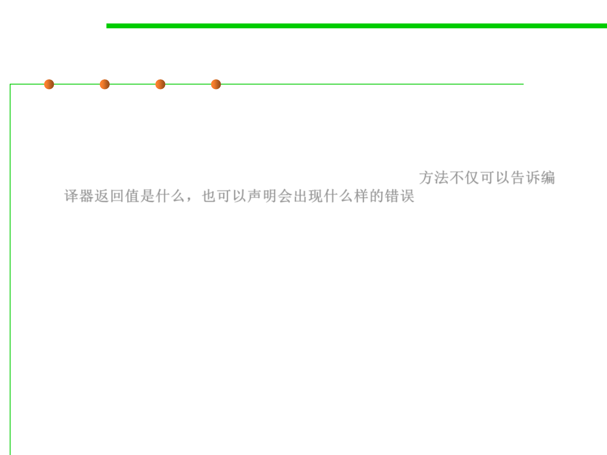

7.2 Error and Exception Handling
Declaring Checked Exceptions by throws
▪ A Java method can throw an exception if it encounters a situation it
cannot handle.
– A method will not only tell the Java compiler what values it can return, it
is also going to tell the compiler what can go wrong. 方法不仅可以告诉编
译器返回值是什么，也可以声明会出现什么样的错误
– E.g. code that attempts to read from a file knows that the file might not
exist or that it might be empty. The code that tries to process the
information in a file therefore will need to notify the compiler that it can
throw some sort of IOException.
▪ The place in which you advertise that your method can throw an
exception is the header of the method; the header changes to reflect
the checked exceptions the method can throw.
public FileInputStream(String name)
throws FileNotFoundException